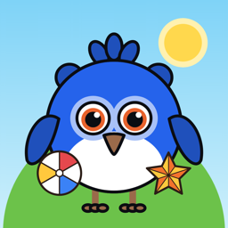

Rombik GamesSupport — Rombik Games
- E-mail: daka.kolp01@gmail.com
- Telegram: @darya_kolp
How do I open the parents' page?
On the meadow, tap the round gear button in the top-right corner and answer the simple sum for grown-ups. The page has the purchase, the language, the music and a link to rate the app.
How do I open all the games?
Shapes and Sizes are free. On the parents' page, tap "Unlock all games" and answer one more sum: the store's own payment sheet opens. It is a single purchase with no subscription, and games added later open with it too.
I bought the games, but they are locked on another device
Sign in to the same Apple ID or Google account as when buying, open the parents' page and tap "Restore purchases". On iPhone and iPad the purchase is also shared with your Family Sharing group.
How do I ask for a refund?
Payments are handled by the store, so refunds are too: on the App Store through reportaproblem.apple.com, on Google Play through Google Play's refund page.
How do I change the language or turn off the music?
Both are on the parents' page: English or Ukrainian, or as on the device, and the background music. All sound turns off with the round sound button on the meadow, one tap away.
How do I switch between day and night?
Touch the sun or the moon over the meadow.
What data does the app collect?
None: no accounts, no ads, no analytics, and it works offline. Details are in the privacy policy.
Підтримка — Rombik Games
- E-mail: daka.kolp01@gmail.com
- Telegram: @darya_kolp
Як відкрити сторінку для батьків?
На галявині торкніться круглої кнопки-шестерні у правому верхньому куті й дайте відповідь на простий приклад для дорослих. Там покупка, мова, музика й посилання, щоб оцінити застосунок.
Як відкрити всі ігри?
«Форми» й «Розміри» безкоштовні. На сторінці для батьків натисніть «Відкрити всі ігри» й дайте відповідь на ще один приклад — відкриється вікно оплати магазину. Це одна покупка без підписки, і нові ігри відкриваються разом із нею.
Ігри куплено, але на іншому пристрої вони закриті
Увійдіть у той самий Apple ID чи обліковий запис Google, що й під час покупки, відкрийте сторінку для батьків і натисніть «Відновити покупки». На iPhone та iPad покупкою також можуть користуватися учасники вашої групи «Сімейний доступ».
Як повернути гроші?
Оплату обробляє магазин, тож і повернення теж: в App Store — через reportaproblem.apple.com, у Google Play — через сторінку повернень Google Play.
Як змінити мову чи вимкнути музику?
Усе на сторінці для батьків: українська чи англійська або як на пристрої, а також фонова музика. Увесь звук вимикає кругла кнопка звуку на галявині — одним дотиком.
Як змінити день на ніч?
Торкніться сонця чи місяця над галявиною.
Які дані збирає застосунок?
Жодних: без облікових записів, реклами й аналітики, і він працює без інтернету. Деталі — у політиці конфіденційності.